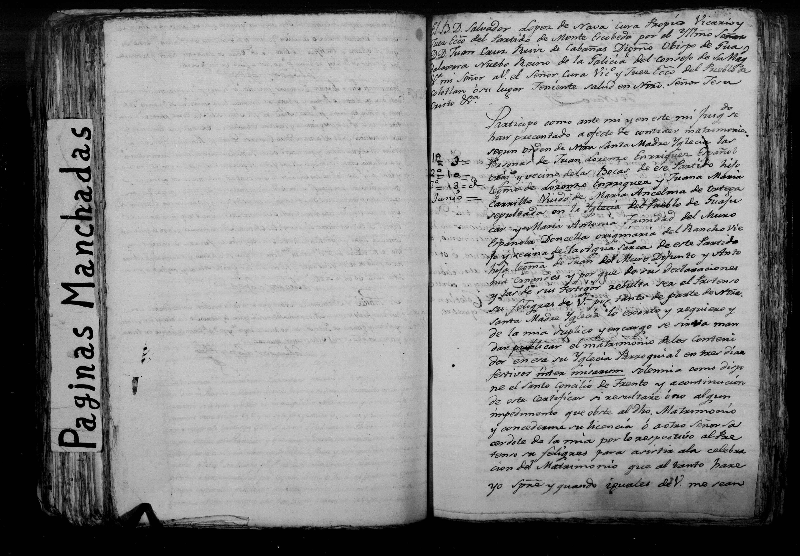

Juan Lorenzo Enrriquez

| Tipo | Expediente matrimonial |
| Fecha | 10 de mayo de 1804 |
| Lugar | Monte Escobedo, Zacatecas |
| Esposo | Juan Lorenzo Enrriquez; padres Lorenzo Enrriquez y Juana Maria Carrillo |
| Esposa | Maria Antonia Trinidad del Muro; padres Juan del Muro, Antonia Ernandes |
Transcripción pendiente de verificación: los datos provienen del índice del registro; el manuscrito no ha sido releído línea por línea. Todo texto manuscrito no verificado se marca «ilegible/duda».